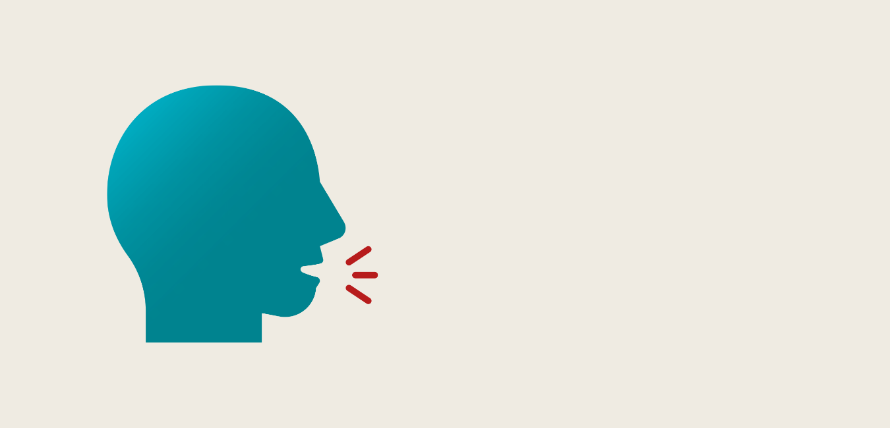

<!DOCTYPE html>
<html lang="en" dir="ltr">
  <head>
    <meta charset="utf-8">
    <title>Lerndeutschmitlinh</title>
    <meta name="viewport" content="width=device-width, initial-scale=1.0">
<link rel="stylesheet" href="css/homepage.css" type="text/css">
<link rel="stylesheet" href="css/bootstrap-grid.css" type="text/css">
<link rel="preconnect" href="https://fonts.gstatic.com">
<link rel="preconnect" href="https://fonts.gstatic.com">
<link href="https://fonts.googleapis.com/css2?family=Inconsolata:wght@400;700&family=Newsreader:wght@500&family=Prata&display=swap" rel="stylesheet">
  </head>
    <body>
      <nav>
        <ul class="navigation">
          <li><a href="#Über mich">Über mich</a></li>
          <li><a href="#Wortschatzlernen">Wortschatzlernen</a></li>
          <li><a href="#Kurse">Kurse</a></li>
          <li><a href="#Kontakt">Kontakt</a></li>
        </ul>

      </nav>

      <header class="row">

          
      <!-- left-->
        <section class="col left-col">
          <div class="top-container">
            <h1>Hallo</h1>
            <p>Willkommen zu LerndeutschmitLinh!</p>
          </div>
        </section>
        
        <!-- right-->
        <section class="col right-col">
          <div  class="intropic">
            
            <p>Ich bin Linh, deine Deutschlehrerin.</p>
          </div>
        </section>

      </header>
      <main class="container">


        <!-- Übermich-->
        <section class="Über mich" id="Über mich">
            <h2>Über mich</h2>
          <div class="row">
            <div class="col-md-6 left-col1">
              <p>Ich bin Linh.<br>
              Ich komme aus Hanoi, Vietnam und seit über 10 Jahren habe ich mich mit dem Thema Deutschlernen und
              -lehren beschäftigt. <br>
              Ich habe 2021 mein Studium in Deutsch als Fremd- und Zweitsprache an der Uni Leipzig abgeschlossen. <br>
              Lass uns nun gemeinsam mit den besten Methoden, die ich aus meinem Studium und meinen eigenen Erfahrungen gesammelt haben, gemeinsam unsere Lernziele erreichen!
              </p>
            </div>


          <div class="col-md-6 right-col1">
            <p>Mình tên là Linh.<br>
            Mình đến từ Hà Nội, Việt nam và hơn 10 năm
            mình rất tâm huyết với việc học và dạy tiếng Đức. <br>
            Năm 2021 Linh cũng đã tốt nghiệp khoa Ngôn ngữ Đức ở trường Đại học Leipzig.<br>
            Và bây giờ thì chúng mình hãy cùng nhau, bằng những phương pháp học tốt nhất từ Chuyên ngành của Linh và cả những kinh nghiệm cá nhân của riêng Linh nữa, để đạt được những mục tiêu mà chúng mình đề ra nhé!
            </p>
            </div>
          </div>
        </section>
        <!-- Wortschatzlernen-->
        <section class="Wortschatzlernen" id="Wortschatzlernen">
            <!--left-->
            <div class="wortschatzlernen">
              <h2>Wortschatzlernen mit Bildern</h2>
              <div class="row">

                <div class="col-md-6 left-col1">
                  <p>Trong tiếng Đức có câu 'Ein Bild sagt mehr als tausend Worte', có nghĩa là một bức hình có thể biểu đạt được nhiều hơn cả ngàn lời. Hơn thế nữa việc học và ghi nhớ kiến thức bằng hình ảnh, giúp não bộ của chúng ta nhớ theo hệ thống mã kép, bao gồm mã bằng hình ảnh (Visual) và mã bằng ngôn ngữ (Verbal). Chỉ cần nhớ được một yếu tố thì lưu trữ  yếu tố còn lại cũng được kích hoạt theo. <br>
                  Điều này đã được khoa học chứng minh và mang tính khả thi rất cao trong thực tiễn, vậy nên Linh đã dựa trên những lý thuyết cơ bản này để tạo nên kênh Instagram học từ vựng tiếng Đức đặc biệt dành riêng cho các bạn người Việt đang chinh phục ngôn ngữ tiếng Đức.</p>
                </div>

            <!--right-->
            <div class="col-md-6 right-col1">
              <a class="Instagram" href="https://www.instagram.com/lerndeutschmitlinh/" target="_blank">Follow Instagram @Lerndeutschmitlinh!</a>
              </div>
            </div>

          </section>

        <!-- Kurse-->
        <section class="Kurse" id="Kurse">
        <h2>Kurse</h2>
        <div class="row">
          <div class="col-md-6 left-col2">
            
            <p>Online-Kurse</p>
          </div>

        <div class="col-md-6 right-col2">
          <p>Hiện tại Linh đang mở các lớp online luyện thi các trình độ tiếng Đức từ A1-C1, luyện thi Studienkolleg và luyện phát âm. Hãy liên hệ với Linh để được tư vấn các khoá học phù hợp nhất với bạn nhé.</p>
        </div>

        </div>
          <!-- first-->
          <div class="Niveausstufe">
            <h3>Niveausstufe A1-C1</h3>
            <div class="row">
              <div class="col-md-6 left-col2">
                <p>Từ trình độ vỡ lòng cho đến trình độ khó, tương ứng với tiêu chuẩn học Đại học ở Đức ở cả 4 kĩ năng Nghe, Nói, Đọc và Viết.<br>
                Đặc biệt Linh không chỉ chú ý đến việc ôn dạy  Ngữ pháp, mà còn đặc biệt quan tâm đến tính ứng dụng của việc học, tức là khả năng giao tiếp, ứng xử trong cuộc sống hằng ngày.
                </div>
                </p>
            </div>
          </div>
          <!-- second-->
          <div class="Vorbereitung">
            <h3>Vorbereitung zur Aufnahmeprüfung am Studienkolleg </h3>
            <div class="row">
              <div class="col-md-6 left-col2">
                <p>Những khoá học dành cho các bạn đang chuẩn bị cho các kì thi vào các trường dự bị Đại học ở Đức.</p>
                </div>
              </div>
          </div>

          <!-- third-->
        <div class="Aussprachetraining">
          <h3>Aussprachetraining</h3>
            <div class="row">
              <div class="col-md-6 left-col2">
                
              </div>
              <div class="col-md-6 right-col2">
                <p>Ở các giáo trình học và dạy tiếng Đức thông thường, việc luyện phát âm thường bị lãng quên.<br><br>
                Thế nhưng ngược lại ở ngoài thực tế, việc có một phát âm đúng và chuẩn có ảnh hưởng rất lớn đến quá trình giao tiếp. Việc phát âm chuẩn giúp chúng ta tránh được những hiểu lầm không đáng có và còn giúp chúng ta có được sự tự tin trong giao tiếp.  <br><br>
                Hiểu rõ được vấn đề này, Linh đã tìm hiểu kĩ những điểm khác biệt giữa việc phát âm trong tiếng Việt và tiếng Đức để biết được những khó khăn mà học sinh Việt nam hay mắc phải trong phát âm tiếng Đức,cũng như các bài tập tương ứng để giúp chúng ta luyện được những nhóm cơ cần thiết cho việc phát âm âm tiết tiếng Đức, những âm tiết lạ đối với người Việt.
                </div>
            </div>
          </div>
        </section>

        <!-- Kontakt-->
        <section class="Kontakt" id="Kontakt">
          <h2>Kontakt</h2>
        <div class="row">
            <div class="col-md-6 left-col1">
              <p>E-mail: lerndeutschmitlinh@gmail.com <br>
              </p>
            </div>
            <div class="col-md-6 right-col1">
              
            </div>
        </div>
        </section>
      </main>

  </body>

<footer>
<div class="container">
  <div class="social-icons-container">
     <a href="https://www.instagram.com/lerndeutschmitlinh/"></a>
     <a href="https://www.facebook.com/lerndeutschmitlinh"></a>
     </div>
    <p>Designed by Linh Nguyen from @LerndeutschmitLinh</p>
</div>
</footer>
</html>
